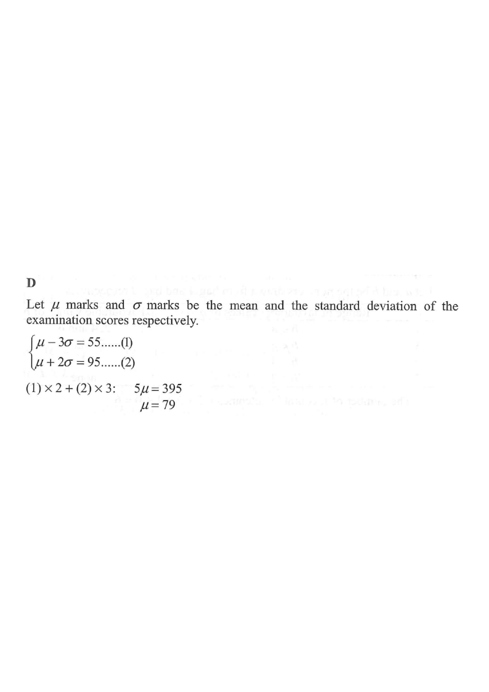

Move through the steps → the figure highlights each relation.
Curve: mean $\mu$, sd $\sigma$. Peter at $z=-3$; Mary at $z=2$.

Question. In an examination, Peter gets \(48\) marks and his standard score is \(-2\), while Mary gets \(84\) marks and her standard score is \(1\). Find the mean of the examination scores.